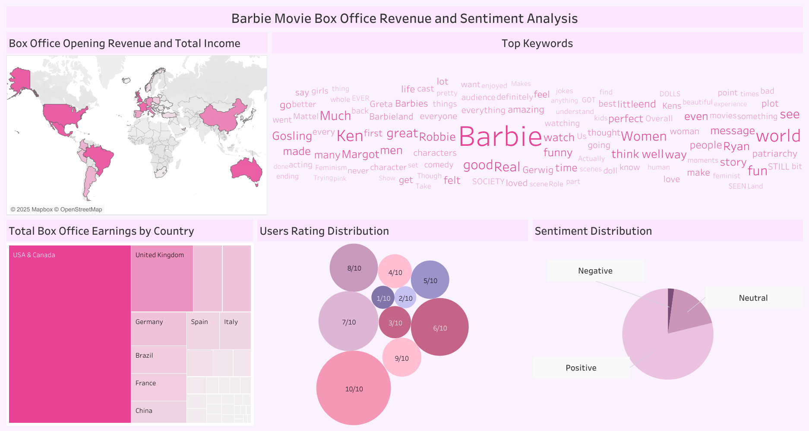

A data analyst with a degree in computer science and certifications in Google Data Analytics and Python for Data Science.
I have built projects ranging from child malnutrition modeling in the MENA region to interactive dashboards in Tableau- always
with the goal of turning numbers into practical solutions.
Integrated UNICEF/WHO nutrition surveys, World Bank socioeconomic metrics, and FAO agricultural data across 20 MENA countries (2000–2022). Developed interactive visualizations,
a Random Forest model (R²≈0.78) with SHAP explainability, and 10-year stunting forecasts to inform targeted food-sovereignty and poverty-alleviation policies.

Leveraged Python (Pandas, NumPy) and TextBlob to analyze global box office performance and IMDb review sentiment for the Barbie movie.
Delivered dynamic charts and statistical summaries that reveal revenue trends and audience emotions across markets.

Created an interactive Tableau dashboard mapping Barbie’s international box office and viewer sentiment.
Users can explore revenue by country and sentiment categories via intuitive charts, maps, and filters.

Built a Python tool (Pandas, NumPy) to explore bikeshare usage in Chicago, NYC, and Washington.
Features include filters for city, month, and day, plus summary stats on trip durations, popular stations, and rider demographics.
Executed advanced SQL queries on global COVID-19 datasets to uncover trends in infection rates, vaccination progress, and case fatality.
Produced clear tabular summaries and charts to support data-driven insights.
Designed a Tableau dashboard visualizing key COVID-19 metrics—cases, vaccinations, and mortality—across continents and countries.
Interactive maps and trend lines enable comparative analysis.